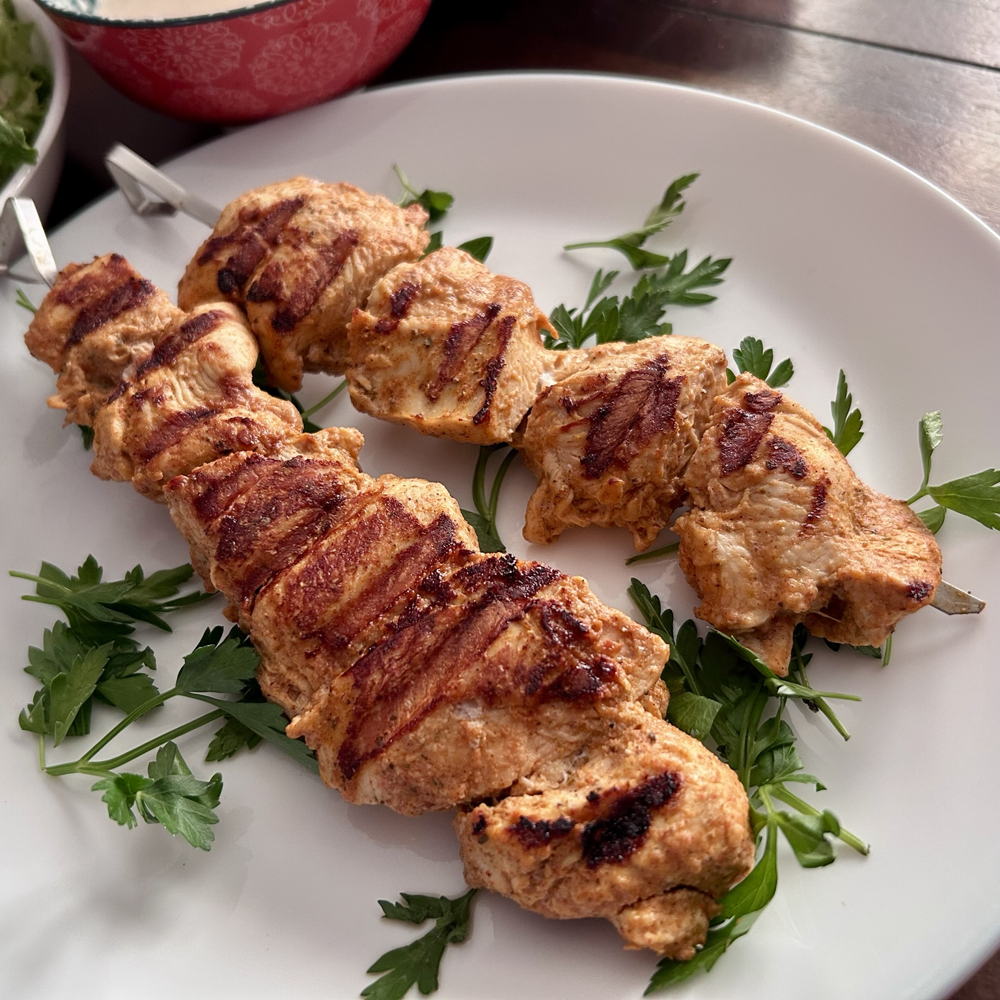

Main
Chicken Shish / Chicken Tawook
Simple yoghurt-spiced chicken breast skewers with cumin, paprika, Aleppo pepper, and sumac.

Ingredients
Chicken
- 2 lb chicken breast
Marinade
- 1 tbsp olive oil
- 1 tbsp lemon or lime juice (about 1 lime)
- 1 tbsp Greek or plain yoghurt
- 2 tsp garlic powder or freshly grated garlic
- 1 tsp ground cumin
- 1 tsp smoked paprika
- 1 tsp Aleppo pepper
- 1 tsp sumac
- 1/2 tsp dried herbs, such as oregano
Method
- Cut the chicken breast into roughly 1-inch cubes. Making one edge slightly shorter helps the pieces sit flatter on the skewers and cook more evenly.
- Mix all marinade ingredients, coat the chicken thoroughly, and refrigerate in a covered container or zip-lock bag for 6–12 hours.
- Thread the chicken onto skewers.
- Grill on a hot cast-iron grill, in the over, or outdoor grill, turning until browned and cooked through. Chicken breast should reach 165°F internally after resting, so take out ~155°F.
Serving
Serve hot with flatbread, salad, rice, pickles, or a yoghurt-based sauce.
Bonus: It is especially good with a simple tahini sauce: 1 part tahini, 1 part lemon juice, salt to taste, and enough water to dilute to the consistency you like.
Notes
This simple yoghurt-spice marinade also works very well with lamb. For lamb, a longer 12–24 hour marinade is especially good.
In Turkish, şiş (shish) means a sword or skewer; tradition goes that the dish was invented by Medieval soldiers who used their swords to grill meat.